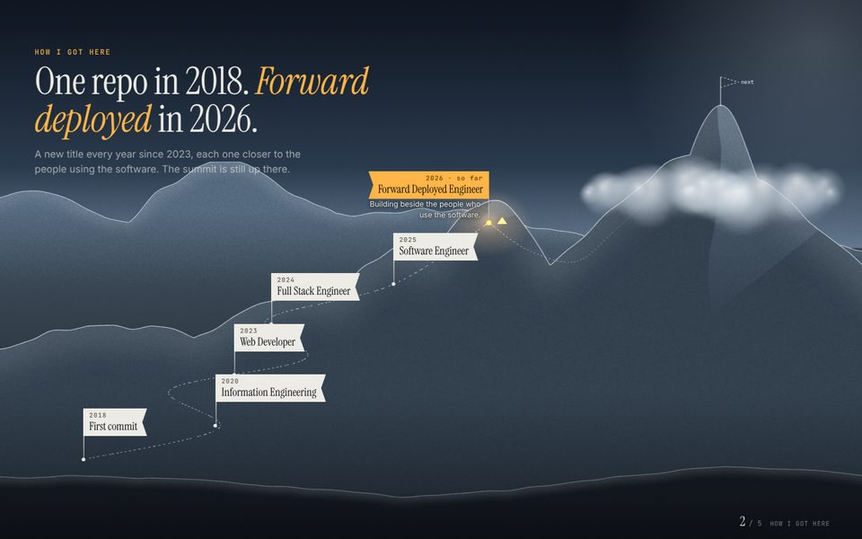

open ↗Unfold
round 4 · whole siteOne continuous move through a paper landscape, drawn on one canvas so it stays light. 2026 is a camp, not the top: the trail goes on into cloud, to a higher summit that clears at the end.
- Hello. The name between ridges at first light. The ridges tear at their valleys and part like a curtain.
- How I got here. A flag a year up the trail to the camp, each with a line on what changed.
- Selected work. The camera flies into the cloud by the camp and comes out at the work: seven live panels, the front four with two real numbers each.
- Craft. A crane along the camp at golden hour. The panels lie down in a wave and six live specimens stand up.
- Contact. Clouds rise and part on the summit at last light, with the trail up it and "Say hello."
Candidate for the live site. Replaces round 3. The browser's own scroll, eased, with no library. It drops its own quality on slow machines and works without WebGL. It replaces nothing until Alan says so.